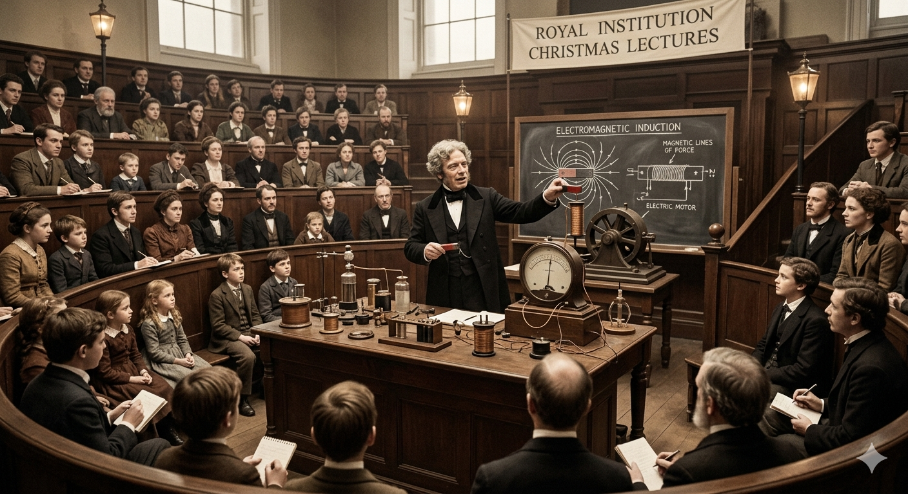

Descubra os grandes feitos de Faraday
Indução eletromagnética
Por Luciana
Descobriu em 1831 que um campo magnético em movimento pode gerar corrente elétrica em um circuito, o princípio por trás dos geradores e usinas atuais.
Fonte: Lab.Faraday
![Uma ilustração colorida e detalhada, no estilo de uma gravura do século XIX, que retrata o famoso cientista Michael Faraday em seu laboratório de química. Faraday, com seu característico cabelo branco e óculos redondos, está sentado à esquerda, voltado para a direita. Ele está concentrado, vestindo um terno preto com colete e um laço. Com a mão direita, ele segura um balão de fundo redondo contendo um líquido transparente. Com a mão esquerda, ele escreve com uma pena em um caderno aberto à sua frente.
O caderno aberto mostra na página direita o título <em>BENZENE</em> e C₆H₆, com o diagrama hexagonal da estrutura do benzeno, incluindo os átomos de carbono e hidrogênio em cada vértice e C₆H₆ no centro.](imagem/benzeno.png)